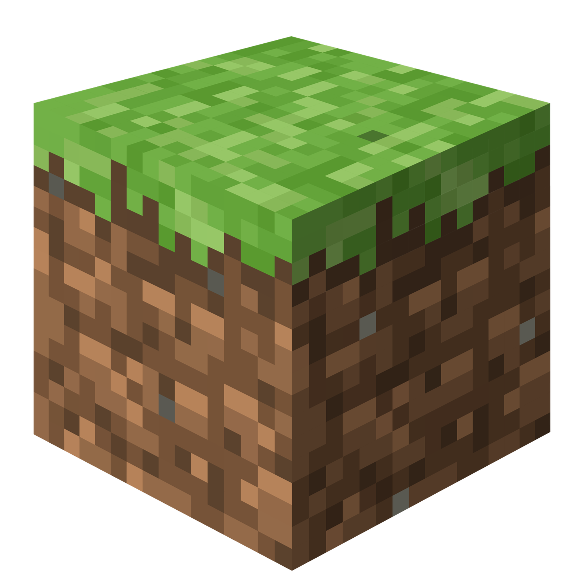

PAGINA PRINCIPALE

(si consiglia di utilizzare Optifine per avere più funzionalità)
Nota: la texture è in continua (ma non costante) evoluzione. Per avere aggiornamenti in tempo reale si consiglia di entrare nel server Discord.
Ultimo aggiornamento: 11/03/2025